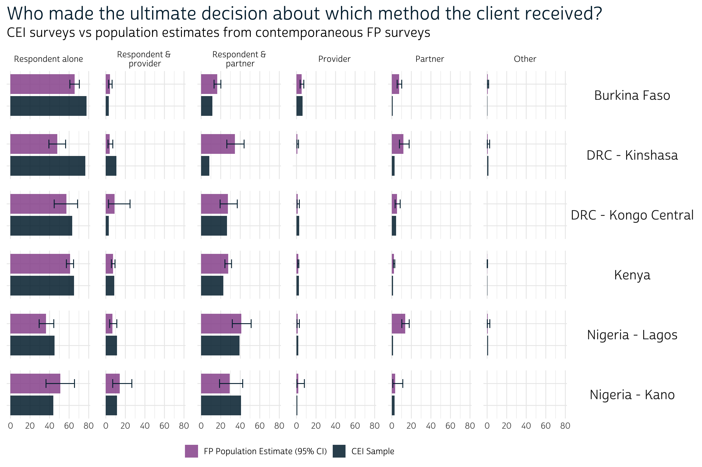

Client Exit Interview (CEI) surveys from PMA capture the service experience of female family planning clients immediately following a visit to a health facility sampled in a contemporaneous Service Delivery Point (SDP) survey. In previous posts, weve explained that CEI surveys use non-random convenience sampling to select reproductive aged women visiting a facility during a particular two-day observation period.
This type of sampling is useful because it maximizes the number of available CEI survey participants within a set time frame, but it also introduces potential sources of sample bias against the broader population of female family planning clients in each country or region (both the observation period and the underlying SDP sampling frame are non-random). CEI surveys offer a snapshot of client perspectives at a certain time and place, but they are not intended for population-level inference.
In contrast to CEI surveys, PMA Family Planning (FP) surveys are randomly sampled, and there are a number of questions about family planning service quality that are common to both. In FP surveys, women who were currently using a modern family planning method - or had used one in the past 12 months - were asked about their service experience with the provider where they obtained the method (regardless of whether the provider was a facility sampled in an SDP survey). These questions are nearly identical to some of the questions youll find in a CEI survey collected in the same time and place, except that women in the FP survey were asked to recall family planning visits that happened potentially several months in the past.
In this post, well guide you through all of the variables youll find in contemporaneous FP and CEI surveys. Well also compare descriptive statistics for each CEI sample with population-level estimates derived from a corresponding FP survey. This will give us some sense of how CEI samples compare with a broader population of female family planning clients in each country or region. As of this writing, IPUMS PMA offers FP surveys from the following places that were collected contemporaneously with CEI surveys (these FP surveys are nationally representative, or regionally representative as noted):
- Burkina Faso
- Kenya
- DRC - Kongo Central
- DRC - Kinshasa
- Nigeria - Lagos
- Nigeria - Kano
To follow along, youll need to create two separate data extracts from the IPUMS PMA website containing these samples - one for the Client Exit Interview unit of analysis, and another for the Family Planning unit of analysis.

To switch from one unit of analysis to the other, click the CHANGE button at the top of your screen:

Comparable survey questions
Lets take a look at the questions youll find repeated in both the CEI and FP surveys. While a particular question may be identical - or nearly identical - on both surveys, you may find it listed under different variable names. The table below shows all of the questions that appear on both surveys (excluding automatically generated technical and geographic variables), and it gives the variable name youll need to include in each of your data extracts.
For this post, well also include GEOCD and GEONG (survey regions for DRC and Nigeria), as well as FQWEIGHT (the FP sampling weight - no such weight is available for CEI surveys).
| Client Exit Interview | Family Planning Survey | Description |
|---|---|---|
| AGE | AGE | Respondents age |
| EDUCATT | EDUCATT | Respondents education level |
| EDUCATTGEN | EDUCATTGEN | Respondents education level (general) |
| MARSTAT | MARSTAT | Respondents marital status |
| BIRTHEVENT | BIRTHEVENT | Count of respondents birth events |
| FACILITYTYPE | FPPROVIDER | Faciliy type (detailed) |
| FACILITYTYPEGEN | FPPROVIDER | Facility type (general) |
| AUTHORITY | FPPROVIDERGEN | Facility managing authority |
| REFERFAC | FPPROVIDEREFER | Respondent would refer a relative/friend to facility |
| RETURNFAC | FPPROVIDERETURN | Respondent would return to facility |
| FPGETDESIREDTODAY | FPGETDESIRED | Respondent received preferred FP method |
| FPGETWHYTODAY | FPGETDESIREDWHY | Reason respondent did not receive preferred FP method |
| FPDECIDEMETHOD | FPDECIDEMETHOD | Person who decided which FP method the respondent received |
| TELLSWITCH | FPTOLDSWITCH | Provider told respondent she could switch FP methods in the future |
| DISCOTHFP | FPCUROM | Provider told respondent about other FP methods she could use |
| TELLSIDEEFF | FPCUREFF | Provider told respondent about potential side effects / problems |
| TELLSEPROB | FPCURDEAL | Provider told respondent what to do about side effects / problems |
| INTFQMON | INTFQMON | Interview month |
| INTFQYEAR | INTFQYEAR | Interview year |
| GEOCD | GEOCD | Province - DRC |
| GEONG | GEONG | State - Nigeria |
| FQWEIGHT | Female questionnaire weight (not available for CEI) |
Once youve downloaded both extracts, place them into the data folder in your working directory. Load them into R as separate data frames for the moment - well call ours cei and fp.
library(ipumsr)
library(tidyverse)
cei <- read_ipums_micro(
ddi = "data/pma_00001.xml",
data = "data/pma_00001.dat.gz"
)
fp <- read_ipums_micro(
ddi = "data/pma_00002.xml",
data = "data/pma_00002.dat.gz"
)
Family planning clients
Well only be examining a subset of the respondents from both surveys in this post. From the CEI survey, well restrict our analysis to women who received family planning information or a family planning method during their visit (most of the questions on the CEI survey were skipped otherwise). Youll find this information in the variable FPINFOYN.
From the FP survey, well only include those women who were asked questions about a recent family planning visit. If a woman in the FP sample did not answer these questions (either because she had not recently used a modern method, or because she obtained it from somewhere other than a health provider) her response to those questions will be coded 99 for NIU (not in universe). Well drop those cases using the variable FPPROVIDERETURN:
Merge CEI and FP data
Now that both of our data frames only contain records for women who recently experienced a family planning visit with their provider, well want to merge them together into a single data frame. First, well create a new variable SURVEY indicating whether a particular record originated in the cei or fp data extract, and well then change variable names as needed in fp to match the corresponding variable in cei (use the above table for reference).
cei <- cei %>%
mutate(SURVEY = "CEI")
fp <- fp %>%
mutate(SURVEY = "FP") %>%
rename(
FACILITYTYPE = FPPROVIDER,
FACILITYTYPEGEN = FPPROVIDER,
AUTHORITY = FPPROVIDERGEN,
REFERFAC = FPPROVIDEREFER,
RETURNFAC = FPPROVIDERETURN,
FPGETDESIREDTODAY = FPGETDESIRED,
FPGETWHYTODAY = FPGETDESIREDWHY,
FPDECIDEMETHOD = FPDECIDEMETHOD,
TELLSWITCH = FPTOLDSWITCH,
DISCOTHFP = FPCUROM,
TELLSIDEEFF = FPCUREFF,
TELLSEPROB = FPCURDEAL
)
Finally, well use bind_rows to create a single data frame called dat. All of the variables appearing under the same name in both cei and fp will be merged together automatically. Variables that only appear in one of the original data frames will be preserved as-is, except that rows from the opposite data frame will be automatically populated with the value NA.
dat <- bind_rows(cei, fp)
For example, INTFQMON and INTFQYEAR appeared in both cei and fp - they describe the month and year in which the interview was conducted. If we now group_by the SURVEY variable we created, well see that that this information has been merged into a single set of variables.
# A tibble: 7 4
# Groups: SURVEY [2]
SURVEY INTFQMON INTFQYEAR n
<chr> <int+lbl> <int+lbl> <int>
1 CEI 1 [January] 2020 1056
2 CEI 2 [February] 2020 603
3 CEI 12 [December] 2019 4267
4 FP 1 [January] 2020 2471
5 FP 2 [February] 2020 294
6 FP 11 [November] 2019 2630
7 FP 12 [December] 2019 2159On the other hand, variables like FPINFOYN appear only on the CEI survey. If we group by SURVEY and count FPINFOYN cases, well see that all women interviewed for the FP survey are coded NA.
# A tibble: 2 3
# Groups: SURVEY [2]
SURVEY FPINFOYN n
<chr> <int+lbl> <int>
1 CEI 1 [Yes] 5926
2 FP NA 7554Survey Design Elements
Like FPINFOYN, the variable representing FP sampling weights FQWEIGHT takes the value NA for all of CEI records in our merged dataset.
# A tibble: 2 3
# Groups: SURVEY [2]
SURVEY `is.na(FQWEIGHT)` n
<chr> <lgl> <int>
1 CEI TRUE 5926
2 FP FALSE 7554Because we want to derive population-level estimates from the FP survey, well need to specify FQWEIGHT as a weight with help from the srvyr package weve used elsewhere on this blog. This would be simple if we only included cases from the FP survey. For example, to compare the mean AGE of family planning clients in the FP sample to the estimated mean AGE of family planning clients in the population for each COUNTRY:
library(srvyr)
# `FQWEIGHT` is the sampling weight for the FP survey
dat %>%
filter(SURVEY == "FP") %>%
as_survey_design(weights = FQWEIGHT) %>%
group_by(SURVEY, COUNTRY) %>%
summarise(
sample_mean = mean(AGE, na.rm = TRUE),
pop_mean = survey_mean(AGE, na.rm = TRUE, vartype = NULL)
)
# A tibble: 4 4
# Groups: SURVEY [1]
SURVEY COUNTRY sample_mean pop_mean
<chr> <int+lbl> <dbl> <dbl>
1 FP 1 [Burkina Faso] 29.6 30.3
2 FP 2 [Congo, Democratic Republic] 28.8 29.1
3 FP 7 [Kenya] 30.9 30.9
4 FP 9 [Nigeria] 32.4 32.5Unfortunately, this same code produces an error if we try to include all of the CEI cases as well. The problem here is that our weights argument cannot include NA values:
# `FQWEIGHT` is `NA` for CEI records
dat %>%
as_survey_design(weights = FQWEIGHT) %>%
group_by(SURVEY, COUNTRY) %>%
summarise(
sample_mean = mean(AGE, na.rm = TRUE),
pop_mean = survey_mean(AGE, na.rm = TRUE, vartype = NULL)
)
Error in (function (object, ...) : missing values in `weights'To solve this problem, well create a copy of FQWEIGHT called DATWEIGHT, except that DATWEIGHT will take the value 1 for all CEI records. As a result, population estimates derived from functions like survey_mean will be identical to the sample statistics for CEI surveys.
dat <- dat %>% mutate(DATWEIGHT = if_else(SURVEY == "FP", FQWEIGHT, 1))
# `sample_mean` == `pop_mean` for CEI, but not for FP
dat %>%
as_survey_design(weights = DATWEIGHT) %>%
group_by(SURVEY, COUNTRY) %>%
summarise(
sample_mean = mean(AGE, na.rm = TRUE),
pop_mean = survey_mean(AGE, na.rm = TRUE, vartype = NULL)
)
# A tibble: 8 4
# Groups: SURVEY [2]
SURVEY COUNTRY sample_mean pop_mean
<chr> <int+lbl> <dbl> <dbl>
1 CEI 1 [Burkina Faso] 28.4 28.4
2 CEI 2 [Congo, Democratic Republic] 30.5 30.5
3 CEI 7 [Kenya] 28.3 28.3
4 CEI 9 [Nigeria] 31.3 31.3
5 FP 1 [Burkina Faso] 29.6 30.3
6 FP 2 [Congo, Democratic Republic] 28.8 29.1
7 FP 7 [Kenya] 30.9 30.9
8 FP 9 [Nigeria] 32.4 32.5You might also recall from previous posts that FP surveys are sampled within geographic clusters identified by the variable EAID. When we report population-level estimates from the FP survey, well want to generate cluster-robust standard errors represented in 95% confidence intervals for each point estimate. Sample clusters can be specified with the id argument in as_survey_design like so:
# Use `id = EAID` for cluster-robust standard errors
dat %>%
as_survey_design(weights = DATWEIGHT, id = EAID) %>%
group_by(SURVEY, COUNTRY) %>%
summarise(
sample_mean = mean(AGE, na.rm = TRUE),
pop_mean = survey_mean(
AGE,
na.rm = TRUE,
vartype = "ci" # produces 95% confidence interval be default
)
)
# A tibble: 8 6
# Groups: SURVEY [2]
SURVEY COUNTRY sample_mean pop_mean pop_mean_low pop_mean_upp
<chr> <int+lbl> <dbl> <dbl> <dbl> <dbl>
1 CEI 1 [Burkina Fa 28.4 28.4 27.9 28.9
2 CEI 2 [Congo, Dem 30.5 30.5 29.3 31.6
3 CEI 7 [Kenya] 28.3 28.3 28.0 28.6
4 CEI 9 [Nigeria] 31.3 31.3 30.3 32.3
5 FP 1 [Burkina Fa 29.6 30.3 29.6 30.9
6 FP 2 [Congo, Dem 28.8 29.1 28.4 29.7
7 FP 7 [Kenya] 30.9 30.9 30.6 31.2
8 FP 9 [Nigeria] 32.4 32.5 31.5 33.4Note: because were only reporting sample statistics for the non-representative CEI surveys, well need to manually suppress CEI confidence intervals in our tables and figures. More on that in a moment.
Variable Recoding
All of the binary variables in our dataset should be recoded as logicals, and all categorical variables with more than two responses should be recoded as factors (we recommend creating levels for each factor that look exactly as you want them to appear in final tables and figures).
As a first step, well want to recode all of the IPUMS PMA top-codes for different types of non-response. Well use across to replace codes for the following value labels with NA in all variables.
dat <- dat %>%
mutate(across(everything(), ~lbl_na_if(.x, ~.lbl %in% c(
"Don't know",
"No response",
"Logical edit - missing",
"No response or missing",
"NIU (not in universe)",
# Special codes for `FPGETDESIREDTODAY`
"Neither, follow-up visit only",
"Did not have a preference",
"Neither, did not obtain"
))))
There are three variables that require additional recoding. First, well want to replace the existing SAMPLE variable with a factor containing concise, readable labels. Well also use GEOCD and GEONG to parse the regional sampling frames used for DRC and Nigeria.
dat <- dat %>%
mutate(
COUNTRY = COUNTRY %>%
as_factor() %>%
fct_recode("DRC" = "Congo, Democratic Republic") %>%
as.character(),
GEO = case_when(
!is.na(GEOCD) ~ GEOCD %>% as_factor() %>% as.character(),
!is.na(GEONG) ~ GEONG %>% as_factor() %>% as.character()
),
SAMPLE = if_else(!is.na(GEO), paste0(COUNTRY, " - ", GEO), COUNTRY),
SAMPLE = as_factor(SAMPLE)
)
As a result, our new SAMPLE variable looks exactly as well want it to appear on the page:
# A tibble: 12 3
SURVEY SAMPLE n
<chr> <fct> <int>
1 CEI Burkina Faso 845
2 CEI DRC - Kinshasa 96
3 CEI DRC - Kongo Central 76
4 CEI Kenya 3901
5 CEI Nigeria - Lagos 460
6 CEI Nigeria - Kano 548
7 FP Burkina Faso 2037
8 FP DRC - Kinshasa 583
9 FP DRC - Kongo Central 474
10 FP Kenya 4000
11 FP Nigeria - Lagos 356
12 FP Nigeria - Kano 104Well also collapse categories in EDUCATTGEN and MARSTAT, creating new binary logicals EDUCAT2 (more than primary/middle school education) and MARSTAT2 (either married or living with a partner).
dat <- dat %>%
mutate(
EDUCAT2 = EDUCATTGEN > 2,
MARSTAT2 = MARSTAT == 21 | MARSTAT == 22
)
# Compare `EDUCAT2` with `EDUCATTGEN`
dat %>% count(EDUCAT2, EDUCATTGEN)
# A tibble: 5 3
EDUCAT2 EDUCATTGEN n
<lgl> <int+lbl> <int>
1 FALSE 1 [Never attended] 1575
2 FALSE 2 [Primary/Middle school] 4646
3 TRUE 3 [Secondary/post-primary] 5207
4 TRUE 4 [Tertiary/post-secondary] 2047
5 NA NA 5# A tibble: 6 3
MARSTAT2 MARSTAT n
<lgl> <int+lbl> <int>
1 FALSE 10 [Never married] 1887
2 FALSE 31 [Divorced or separated] 609
3 FALSE 32 [Widow or widower] 164
4 TRUE 21 [Currently married] 9498
5 TRUE 22 [Currently living with partner] 1319
6 NA NA 3Finally, well recode all of the remaining binary variables as logicals and all of the categorical variables as factors (using the existing IPUMS PMA value labels as levels).
dat <- dat %>%
mutate(
# Create Logicals: `TRUE` if the original variable equals `1`
across(
c(FPGETDESIREDTODAY, REFERFAC, RETURNFAC, FPGETDESIREDTODAY,
TELLSWITCH, DISCOTHFP, TELLSIDEEFF, TELLSEPROB),
~.x == 1
),
# Create Factors: each level is an IPUMS value label
across(c(FPGETWHYTODAY, FPDECIDEMETHOD), as_factor)
)
Graphics theme
One last setup item: well specify a custom theme for figures made with ggplot2. This allows us to generally specify the font, legend, and colors used in all of the graphics created below. Well create a function called theme_pma that applies those formatting options, and well also give it two arguments for a plot title and (optionally) a subtitle.
library(sysfonts)
library(showtext)
sysfonts::font_add(
family = "cabrito",
regular = "../../fonts/cabritosansnormregular-webfont.ttf"
)
showtext::showtext_auto()
options(tibble.print_min = 20)
theme_pma <- theme_pma <- function(
title,
subtitle = NULL
){
components <- list(
theme_minimal() %+replace%
theme(
text = element_text(family = "cabrito", size = 13),
plot.title = element_text(
size = 22, color = "#00263A", hjust = 0, margin = margin(b = 5)
),
plot.subtitle = element_text(
size = 16, hjust = 0, margin = margin(b = 10)
),
legend.position = "bottom",
strip.background = element_blank(),
strip.text.y = element_text(size = 16, angle = 0),
panel.spacing = unit(1, "lines"),
axis.text.y = element_blank()
),
guides(fill = guide_legend(reverse = TRUE)),
scale_fill_manual(values = list("#00263AD9", "#98579BD9")),
labs(
title = title,
subtitle = subtitle,
x = NULL,
y = NULL,
fill = NULL
)
)
}
Demographics
Were now ready to see how CEI samples compare with population estimates derived from representative FP surveys. First, well consider the demographic composition of our samples. There are four main demographic variables appearing in both the CEI and FP surveys. They represent the womans
- age (in years)
- marital status (recoded as
MARSTAT2above) - education level (recoded as
EDUCAT2above) - number of live birth events (excluding stillbirths)
Well use summarise to calculate summary demographic statistics for each SAMPLE separately for the CEI and FP SURVEY, and well store the result in a table called demographics. You can use survey_mean for all four variables here: well calculate a simple average for both AGE and BIRTHEVENT, and well use the optional argument proportion = TRUE to calculate proportions for MARSTAT2 and EDUCAT2 (multiplying by 100 creates percentages).
demographics <- dat %>%
as_survey_design(weights = DATWEIGHT, id = EAID) %>%
group_by(SURVEY, SAMPLE) %>%
summarise(
across(
c(AGE, BIRTHEVENT),
~survey_mean(.x, na.rm = TRUE, vartype = "ci"),
.names = "{.col}_est"
),
across(
c(EDUCAT2, MARSTAT2),
~100 * survey_mean(.x, na.rm = TRUE, vartype = "ci", proportion = TRUE),
.names = "{.col}_est"
)
)
demographics
# A tibble: 12 14
# Groups: SURVEY [2]
SURVEY SAMPLE AGE_est AGE_est_low AGE_est_upp BIRTHEVENT_est
<chr> <fct> <dbl> <dbl> <dbl> <dbl>
1 CEI Burkina Faso 28.4 27.9 28.9 2.85
2 CEI DRC - Kinsha 30.3 28.8 31.9 3.02
3 CEI DRC - Kongo 30.6 29.0 32.3 3.14
4 CEI Kenya 28.3 28.0 28.6 2.70
5 CEI Nigeria - La 33.9 33.2 34.7 2.95
6 CEI Nigeria - Ka 29.1 28.3 29.8 4.41
7 FP Burkina Faso 30.3 29.6 30.9 3.60
8 FP DRC - Kinsha 29.0 28.0 29.9 2.23
9 FP DRC - Kongo 29.2 28.3 30.1 2.94
10 FP Kenya 30.9 30.6 31.2 3.04
11 FP Nigeria - La 32.6 31.4 33.7 2.34
12 FP Nigeria - Ka 32.0 30.5 33.4 5.33
# with 8 more variables: BIRTHEVENT_est_low <dbl>,
# BIRTHEVENT_est_upp <dbl>, EDUCAT2_est <dbl>,
# EDUCAT2_est_low <dbl>, EDUCAT2_est_upp <dbl>, MARSTAT2_est <dbl>,
# MARSTAT2_est_low <dbl>, MARSTAT2_est_upp <dbl>The results here are awkwardly shaped. Because we specified vartype = "ci", weve created three columns for each variable: the suffix _est shows the point-estimate, while _est_upp and _est_low respectively show the upper and lower bounds of a 95% confidence interval.
Lets reshape demographics so that we see only one point-estimate and confidence interval per row. This will slim-down our table to just six columns:
SURVEYSAMPLEVAR- the name of the demographic variableEST- the point estimate calculated bysurvey_meanLOW- the 95% confidence interval lower limitUPP- the 95% confidence interval upper limit
demographics <- demographics %>%
rename_with(~str_remove(.x, "_est"), matches("low|upp")) %>%
pivot_longer(
-c(SAMPLE, SURVEY),
names_sep = "_",
names_to = c("VAR", "STAT"),
values_to = "VALUE"
) %>%
pivot_wider(names_from = STAT, values_from = VALUE) %>%
rename_with(toupper, everything())
demographics
# A tibble: 48 6
# Groups: SURVEY [2]
SURVEY SAMPLE VAR EST LOW UPP
<chr> <fct> <chr> <dbl> <dbl> <dbl>
1 CEI Burkina Faso AGE 28.4 27.9 28.9
2 CEI Burkina Faso BIRTHEVENT 2.85 2.71 2.98
3 CEI Burkina Faso EDUCAT2 36.2 31.8 40.8
4 CEI Burkina Faso MARSTAT2 89.3 86.9 91.4
5 CEI DRC - Kinshasa AGE 30.3 28.8 31.9
6 CEI DRC - Kinshasa BIRTHEVENT 3.02 2.58 3.46
7 CEI DRC - Kinshasa EDUCAT2 94.8 85.8 98.2
8 CEI DRC - Kinshasa MARSTAT2 63.5 45.5 78.4
9 CEI DRC - Kongo Central AGE 30.6 29.0 32.3
10 CEI DRC - Kongo Central BIRTHEVENT 3.14 2.77 3.52
# with 38 more rowsRemember that we purposefully coded DATWEIGHT == 1 for CEI records above so that survey_mean would only produce sample means for those surveys. As a result, the confidence intervals you see for CEI statistics here are not valid. Well only want to keep the values in LOW and UP if the value in SURVEY is FP.
demographics <- demographics %>%
mutate(across(c(LOW, UPP), ~case_when(SURVEY == "FP" ~ .x)))
# `LOW` and `UPP` are now `NA` if `SURVEY == "CEI"`
demographics %>% arrange(VAR, SAMPLE)
# A tibble: 48 6
# Groups: SURVEY [2]
SURVEY SAMPLE VAR EST LOW UPP
<chr> <fct> <chr> <dbl> <dbl> <dbl>
1 CEI Burkina Faso AGE 28.4 NA NA
2 FP Burkina Faso AGE 30.3 29.6 30.9
3 CEI DRC - Kinshasa AGE 30.3 NA NA
4 FP DRC - Kinshasa AGE 29.0 28.0 29.9
5 CEI DRC - Kongo Central AGE 30.6 NA NA
6 FP DRC - Kongo Central AGE 29.2 28.3 30.1
7 CEI Kenya AGE 28.3 NA NA
8 FP Kenya AGE 30.9 30.6 31.2
9 CEI Nigeria - Lagos AGE 33.9 NA NA
10 FP Nigeria - Lagos AGE 32.6 31.4 33.7
# with 38 more rowsFinally, we also recommend creating two more columns containing labels for variables (VARLBL) and each survey (SURVLBL) that look exactly as youd like them to appear on your plot.
demographics <- demographics %>%
mutate(
VARLBL = case_when(
VAR == "EDUCAT2" ~ "More than primary education (%)",
VAR == "AGE" ~ "Mean age",
VAR == "BIRTHEVENT" ~ "Mean birth count",
VAR == "MARSTAT2" ~ "Married or living with partner (%)"
),
SURVLBL = case_when(
SURVEY == "FP" ~ "FP Population Estimate (95% CI)",
SURVEY == "CEI" ~ "CEI Sample"
)
)
Faceted bar blot
Lets plot the results! Because we want to compare CEI sample statistics directly with population estimates derived from the FP survey, grouped bar charts are a nice choice here. Well align two bars (one for each survey), and well use UPP and LOW to plot confidence intervals for the FP population estimates (NA values for the CEI surveys will simply be ignored).
First, consider a layout for just one sample (Kenya) and one variable (AGE). Well plot EST on the x-axis, and well plot SURVEY on the y-axis. Well assign each of the colors specified by theme_pma (created above) with fill = SURVLBL - this also generates a legend with the survey labels we created. Finally, well plot the upper and lower bounds of our population confidence interval with xmin = LOW and xmax = UPP.
demographics %>%
filter(SAMPLE == "Kenya", VAR == "AGE") %>%
ggplot(aes(y = SURVEY, x = EST, fill = SURVLBL, xmin = LOW, xmax = UPP)) +
geom_bar(stat = "identity") +
geom_errorbar(width = 0.4, color = "#00263A") +
theme_pma(
"Mean Age of Family Planning Clients in Kenya",
"CEI survey vs population estimated from a contemporaneous FP survey"
)
If we arrange one pair of bar charts for each sample in a column, well be able to simultaneously compare the differences across surveys and samples. Well use facet_grid to plot one SAMPLE per row.
demographics %>%
filter(VAR == "AGE") %>%
ggplot(aes(y = SURVEY, x = EST, fill = SURVLBL, xmin = LOW, xmax = UPP)) +
geom_bar(stat = "identity") +
facet_grid(rows = vars(SAMPLE)) + # plot one `SAMPLE` per row
geom_errorbar(width = 0.4, color = "#00263A") +
theme_pma(
"Mean Age of Family Planning Clients",
"CEI surveys vs population estimates from contemporaneous FP surveys"
)
We can also combine all four demographic variables into a single figure if we plot each VARLBL in a separate column (and allow the x-axis to vary based in the range of each VAR with scales = "free").
demographics %>%
ggplot(aes(y = SURVEY, x = EST, fill = SURVLBL, xmin = LOW, xmax = UPP)) +
geom_bar(stat = "identity") +
facet_grid(
rows = vars(SAMPLE), # plot one `SAMPLE` per row
cols = vars(VARLBL), # plot one `VARLBL` per column
scales = "free" # fit one x-axis range per `VAR`
) +
geom_errorbar(width = 0.4, color = "#00263A") +
theme_pma(
"Family Planning Client Demographics",
"CEI surveys vs population estimates from contemporaneous FP surveys"
)
What do we learn from this graphic? For the most part, CEI samples share a similar demographic profile with the broader population of female family planning clients in each place. In most cases, the mean age and birth count of women in a particular CEI sample falls within - or very close to - the range wed expect to see in the population. Similarly, the percentage of partnered women and women with more than primary education in the CEI sample mirrors the population very closely. Lets see if these similarities extend beyond demographics into variables that directly measure family planning service experience.
Service Experience
Well recycle this same workflow as we explore additional variables related to the quality of service experienced by women in each survey. These variables describe three general aspects of service experience, and well make one plot for each:
- Method information
- Client autonomy
- Client satisfaction
Method Information
CEI and FP surveys each contain four common questions related to the quality of information about family planning methods provided to clients during their visit. They ask the respondent to recall whether their provider mentioned:
- other family planning methods they might use
- side effects or problems they might have with the method
- what to do about those side effects or problems
- that they could switch methods in the future
These questions are regularly included in global health surveys, and youll often find them indexed together as the Method Information Index PLUS (MII+). This index is simple to calculate, so well demonstrate it here: a client meets the criteria for MII+ if she responds positively to all four component questions.
As shown above, well again create summary proportions for the four source variables along with our new variable MIIplus. The only difference here is that well create VARLBL as a factor with levels sorted in the order we want them to appear on our plot (the index MII+ should appear last).
meth_info <- dat %>%
mutate(MIIplus = if_all(c(TELLSWITCH, DISCOTHFP, TELLSEPROB, TELLSIDEEFF))) %>%
as_survey_design(weights = DATWEIGHT, id = EAID) %>%
group_by(SURVEY, SAMPLE) %>%
summarise(across(
c(TELLSWITCH, DISCOTHFP, TELLSEPROB, TELLSIDEEFF, MIIplus),
~100 * survey_mean(.x, na.rm = TRUE, vartype = "ci", proportion = TRUE),
.names = "{.col}_est"
)) %>%
rename_with(~str_remove(.x, "_est"), matches("low|upp")) %>%
pivot_longer(
-c(SAMPLE, SURVEY),
names_sep = "_",
names_to = c("VAR", "STAT"),
values_to = "VALUE"
) %>%
pivot_wider(names_from = STAT, values_from = VALUE) %>%
rename_with(toupper, everything()) %>%
mutate(
across(c(LOW, UPP), ~case_when(SURVEY == "FP" ~ .x)),
VARLBL = VAR %>%
fct_relevel("DISCOTHFP", "TELLSWITCH", "TELLSIDEEFF", "TELLSEPROB") %>%
fct_recode(
"about other methods \nshe could use?" = "DISCOTHFP",
"that she could switch \nmethods in the future?" = "TELLSWITCH",
"aobut any side effects or \nproblems she might have?" = "TELLSIDEEFF",
"what to do about side \neffects or problems?" = "TELLSEPROB",
"All of the above \n (MII+)" = "MIIplus"
),
SURVLBL = case_when(
SURVEY == "FP" ~ "FP Population Estimate (95% CI)",
SURVEY == "CEI" ~ "CEI Sample"
)
)
Our plotting function is also nearly identical to the one we used above, except that well use scales = "fixed" to assign the same x-axis range to each column.
meth_info %>%
ggplot(aes(y = SURVEY, x = EST, fill = SURVLBL, xmin = LOW, xmax = UPP)) +
geom_bar(stat = "identity") +
facet_grid(
rows = vars(SAMPLE), # plot one `SAMPLE` per row
cols = vars(VARLBL), # plot one `VARLBL` per column
scales = "fixed" # fit one x-axis range per `VAR`
) +
geom_errorbar(width = 0.4, color = "#00263A") +
theme_pma(
"Componenents of Method Information Index PLUS",
paste(
"During her family planning visit, did the client's provider tell her..."
)
)
Given that CEI sample participants provided responses immediately following a family planning visit, while FP participants were asked to reflect on these matters potentially several months after theirs, you might expect to find some artifact of recency bias at work in the way that provider conversations are remembered over time.
In fact, we dont see consistent evidence of recency bias in these results. For example, the proportion of women in the Burkina Faso CEI sample responding positively to each component of MII+ is significantly lower than the percentage wed expect to see in the population. The opposite is true for the Lagos and Konga Central CEI samples, where the proportion of women responding positively to each MII+ component is higher (or statistically the same) compared to the population. In our simple analysis, it seems that differences across countries and regions tell a more consistent story than differences in the recency of the family planning visit - but theres certainly more to explore here!
Client autonomy
A second aspect of service experience covered in both surveys describes whether the client autonomously decided which family planning method she received during her visit, or whether that decision was made with or by someone else.
This time, were only working with one variable, FPDECIDEMETHOD, so theres no need to use across in our summary function. We wont need to plot multiple questions in columns, either; instead, well use columns to show the proportion associated with each response.
decider <- dat %>%
as_survey_design(weights = DATWEIGHT, id = EAID) %>%
filter(!is.na(FPDECIDEMETHOD)) %>%
group_by(SURVEY, SAMPLE, FPDECIDEMETHOD) %>%
summarise(FPDECIDEMETHOD_EST = 100*survey_mean(vartype = "ci", propo = T)) %>%
rename(EST = matches("est$"), LOW = matches("low"), UPP = matches("upp")) %>%
mutate(
across(matches("low|upp"), ~case_when(SURVEY == "FP" ~ .x)),
SURVLBL = case_when(
SURVEY == "FP" ~ "FP Population Estimate (95% CI)",
SURVEY == "CEI" ~ "CEI Sample"
),
FPDECIDEMETHOD = FPDECIDEMETHOD %>%
str_replace("and", "&\n") %>%
fct_relevel(
"Respondent alone", "Respondent &\n provider", "Respondent &\n partner",
"Provider", "Partner", "Other"
)
)
decider %>%
ggplot(aes(y = SURVEY, x = EST, fill = SURVLBL, xmin = LOW, xmax = UPP)) +
geom_bar(stat = "identity", position = "dodge") +
facet_grid(
rows = vars(SAMPLE),
cols = vars(FPDECIDEMETHOD), # this time, response options in columns
scales = "fixed"
) +
geom_errorbar(width = 0.4, color = "#00263A") +
theme_pma(
"Who made the ultimate decision about which method the client received?",
"CEI surveys vs population estimates from contemporaneous FP surveys"
)

Overall, a plurality of women in every survey indicated that they alone made the ultimate decision about the method they received (this includes a majority of cases in every CEI sample, except for those collected in Nigeria). Partners also contributed to the decision in many cases, but the decision was more commonly shared than made by the partner alone. The proportion for each response in the CEI survey falls within - or very close to - the 95% confidence interval for nearly every population.
Client Satisfaction
The final aspect of service experience youll find covered in both CEI and FP surveys deals with the clients satisfaction with her provider. These questions indicate whether the client:
- obtained her preferred family planning method (if she was seeking one and had a preference)
- would return to the same provider again
- would recommend the provider to a friend or relative
Because all three variables are binary, well again calculate summary proportions representing positive responses to each.
satisf <- dat %>%
as_survey_design(weights = DATWEIGHT, id = EAID) %>%
group_by(SURVEY, SAMPLE) %>%
summarise(across(
c(REFERFAC, RETURNFAC, FPGETDESIREDTODAY),
~100 * survey_mean(.x, na.rm = TRUE, vartype = "ci", proportion = TRUE),
.names = "{.col}_est"
)) %>%
rename_with(~str_remove(.x, "_est"), matches("low|upp")) %>%
pivot_longer(
-c(SAMPLE, SURVEY),
names_sep = "_",
names_to = c("VAR", "STAT"),
values_to = "VALUE"
) %>%
pivot_wider(names_from = STAT, values_from = VALUE) %>%
rename_with(toupper, everything()) %>%
mutate(
across(c(LOW, UPP), ~case_when(SURVEY == "FP" ~ .x)),
VARLBL = VAR %>%
fct_relevel("FPGETDESIREDTODAY", "RETURNFAC", "REFERFAC") %>%
fct_recode(
"Obtained her preferred method" = "FPGETDESIREDTODAY",
"Would return to this provider" = "RETURNFAC",
"Would refer this provider \n to a friend or relative" = "REFERFAC"
),
SURVLBL = case_when(
SURVEY == "FP" ~ "FP Population Estimate (95% CI)",
SURVEY == "CEI" ~ "CEI Sample"
)
)
satisf %>%
ggplot(aes(y = SURVEY, x = EST, fill = SURVLBL, xmin = LOW, xmax = UPP)) +
geom_bar(stat = "identity") +
facet_grid(
rows = vars(SAMPLE), # plot one `SAMPLE` per row
cols = vars(VARLBL), # plot one `VARLBL` per column
scales = "fixed" # fit one x-axis range per `VAR`
) +
geom_errorbar(width = 0.4, color = "#00263A") +
theme_pma(
"Family Planning Client Satisfaction",
"CEI surveys vs population estimates from contemporaneous FP surveys"
)
All three measures of client satisfaction were positively rated by nearly all women in every sample, with the curious exception of the two FP surveys fielded in DRC (both DRC CEI samples resemble samples from other places more closely than they resemble DRC FP samples - were not sure why this might be!) Otherwise, we see no major differences across samples or surveys; there are several instances where the proportion of women in a CEI sample who said they would return to this provider or refer this provider to a friend or relative is higher than the upper-limit of a 95% confidence interval for the corresponding population. However, we hesitate to suggest that this is a statistically significant difference: because no more than 100% of the population can answer affirmatively, these confidence intervals may be distorted slightly downward (and subject to methodological choices - see survey_mean for details).
Wrap-up
Theres no way to concisely describe the relationship between Client Exit Interview samples and population estimates weve derived from contemporaneous Family Planning samples. With respect the age, education level, marital status, and the birth history of respondents, CEI samples dont look very different from larger populations of family planning clients. Likewise, weve seen that women in both surveys consistently report high-levels of autonomy when choosing a family planning method, and high-levels of satisfaction with their provider. However, we saw mixed results regarding the quality of information provided about family planning methods (indexed as MII+).
These findings are expected, of course, because CEI surveys arent designed to represent larger populations of family planning clients - they reflect client perspectives collected only in a specific place and time. Still, we hope its helpful to have a general sense of the way that specific variables from CEI surveys resemble similar variables in FP surveys that are randomly sampled.